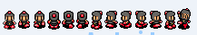
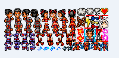
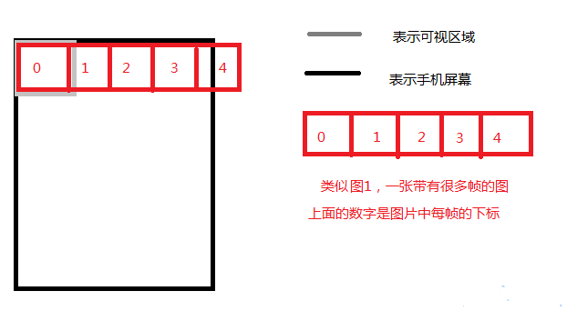
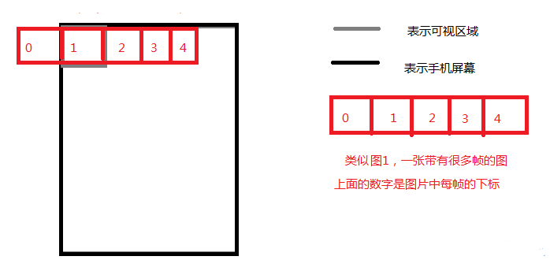

【Android游戏开发二十二】详解游戏中如何灵活实现动画播放!
此章节适合没有做过游戏开发的同学学习！
做过Android软件的童鞋们，在学习游戏开发的时候，思维总是被固定在了Android系统组件上!比如动画实现总想着利用BitmapDrawable、Animation等系统提供的类和方法来实现！
其实在本人以前做J2me开发的时候，J2me Api从MIDP2.0开始提供和封装了Sprite类，通名：精灵类！这个类的几种构造的时候只需要提供图片的大小、宽高、等，就可以生成一个精灵了，因为精灵类提供了碰撞检测、动画播放等方法，让开发者在开发游戏中很是方便。那么其实在制作一些较为复杂的、或者网游开发中，公司内都不会利用这个精灵类来去做，抛开机型不说，因为每个公司都会有其引擎和各种编辑器等等、那么肯定需要扩展，如果利用sprite来开发不仅扩展不方便、不灵活之外而且和编辑器、引擎搭配开发也不适合。但是一般而言，精灵类足够用！但是一般还是利用MIDP1.0自定义完成这个2.0提供的Spirte类,这样更容易维护和自定义扩展！
而且J2me提供的游戏开发包也是一个现成好用的引擎！所以这也可以理解为什么在android游戏开发中，大家很多时候还总会看到Sprite类的影子！还有很多做过me的同学会看到类似的代码，总说“你这Android游戏开发不还是J2me的那套东西么！”，呵呵，没错，但是请童鞋们先想一下，Android现在SDK升级到了2.3了，有听说哪个版本中提供了类似meAPi中的“Game”专用于开发游戏的开发包？答案是肯定没有。而且能把自己在me中的游戏框架拿到android来，更快的进入开发也是很好的，当然这里不是推荐把j2me的那几个游戏扩展包直接拿来用，这种属于移植 - -。反而更加浪费游戏的效率！
总结一句：不是大家不想抛开me的架构来做原生态的Android游戏！而是Android现在没有更好的适合游戏的开发包；
不多说别的了，今天主要为各位童鞋讲解在游戏中如何实现动画！
实现动画，我们一般都是自己去利用图片数组、切片的变换形成的动画。那么下面给大家简单介绍两种实现方式：
第一种： 利用图片数组，不断改变画在画布上的图片数组下标，从而实现动画的形成！(每张图片是动画的一帧)
注意：下面这一段写的是演示代码！请自行整理；
变量：
Bitmap bmp0,bmp1,bmp2;Bitmap[] bmp_array = new Bitmap[3];
int bmpIndex;
初始化中：
bmp0 = BitmapFaxxxxxxxx;
bmp1 = BitmapFaxxxxxxxx;
bmp2 = BitmapFaxxxxxxxx;
bmp_array[0] =bmp0;
bmp_array[1] =bmp1;
bmp_array[2] =bmp2;
画布中：//一直在刷新画布
canvas.drawBitmap(bmp_array[bmpIndex]);
逻辑中： //线程中一直在执行逻辑
bmpIndex++;
if(bmpIndex>=bmp_array.length)
bmpIndex = 0;
逻辑中一直让bmpIndex++，为了让图片数组下标能向着下一张图片索引,这样一来在画布中，就形成了动画了。 有的童鞋说如何控制动画的播放速度呢？有的说改变线程的休眠时间！！？ 游戏开发中一般都只要一个线程来控制，那么如果你为了控制动画的快慢而轻率的去改变线程的休眠时间，那就大错特错了。我们不应该去动主线程的刷新时间（休眠时间）而是想着去针对动画去想办法，这样别的地方不会受到影响！ 一般情况下，刷新时间（线程休眠时间）很快，童鞋们肯定是嫌动画播放太快，那么我们可以自定义一个计时器。 比如我们定义一个变量去消耗掉一些时间！看以下代码：此段代码仍然是演示代码，请注意自行整理；
变量：
Bitmap bmp0,bmp1,bmp2;Bitmap[] bmp_array = new Bitmap[3];
int bmpIndex;
int time;
初始化中：
bmp0 = BitmapFaxxxxxxxx;
bmp1 = BitmapFaxxxxxxxx;
bmp2 = BitmapFaxxxxxxxx;
bmp_array[0] =bmp0;
bmp_array[1] =bmp1;
bmp_array[2] =bmp2;
画布中：//一直在刷新画布
canvas.drawBitmap(bmp_array[bmpIndex]);
逻辑中： //线程中一直在执行逻辑
time++;
if(time%10==0){
bmpIndex++;
}
if(bmpIndex>=bmp_array.length)
bmpIndex = 0;
这段代码和之前那一段唯一的差别就是新增加了一个变量 time ,我们假定我们刷新时间（线程休眠时间）为 100毫秒，那么time++;当if(time%10==0)成立的时候理论上肯定就是正好是一秒钟，【10（time）*100(线程休眠时间)=1000(正好1秒)】这样一来就OK，解决了！第二种：利用切片来实现动画；（所有帧数都放在同一张图片中） 开发过游戏的肯定很熟悉下面这两张图:图1

图2

图1，是个规则的帧数组成的一张图片，图2则是动作编辑器生成的图片。游戏中一般常用的是规则的如图1一样的图片，这样的图片比我们第一种实现动画的方式为内存剩下了不少，那么图2由动作编辑器生成的当然更省！ 这里针对图2这个我就先不多讲了。因为关联到编辑器等、大家可以自行百度下；我们来看图1，如果经常看我博客的会发现图1很熟悉，嘿嘿，对的，这个是《【Android游戏开发之四】Android简单游戏框架》中一个人物行走的demo，第四章我讲解的是一个人物行走的demo，但是关于细节代码当时没有做特别注释和说明，今天正好用在这里，为各位童鞋详解讲解下：先上段代码：
// 为了让童鞋们更容易理解，我这里是把图片分割出来，// 分为上下左右四个人物方向的数组
private int animation_up[] = { 3, 4, 5 };
private int animation_down[] = { 0, 1, 2 };
private int animation_left[] = { 6, 7, 8 };
private int animation_right[] = { 9, 10, 11 };
public void draw() {
canvas = sfh.lockCanvas();
canvas.drawRect(0, 0, SW, SH, p);
canvas.save();
canvas.drawText("android", bmp_x - 2, bmp_y - 10, p2);
// 这里的clipRect是设置可视区域，记得要 canvas.save(); canvas.restore();
// 如果不懂请看【Android游戏开发之四】 ，这里我主要介绍canvas.clipRect()
// 以及canvas.drawBitmap()两个方法中的几个参数!
canvas.clipRect(bmp_x, bmp_y, bmp_x + bmp.getWidth() / 13,
bmp_y + bmp.getHeight());
// bmp_x:图片的x坐标
// bmp_y：图片的y坐标
// bmp_x + bmp.getWidth() / 13 ：图片的x坐标+每一帧的宽度
// bmp_y+bmp.getHeight() ：图片的y坐标+每一帧的高度
if (animation_init == animation_up) {
canvas.drawBitmap(bmp,
bmp_x - animation_up[frame_count] * (bmp.getWidth() / 13),
bmp_y, p);
// bmp:有很多帧在一起的这张图片(图1)
// bmp_x - animation_up[frame_count] * (bmp.getWidth() / 13) :
// 图片的x坐标 - 每一帧的X坐标(这里看备注1)
// bmp_y：图片的y坐标
// p：画笔
} else if (animation_init == animation_down) {
canvas.drawBitmap(
bmp,
bmp_x - animation_down[frame_count] * (bmp.getWidth() / 13),
bmp_y, p);
} else if (animation_init == animation_left) {
canvas.drawBitmap(
bmp,
bmp_x - animation_left[frame_count] * (bmp.getWidth() / 13),
bmp_y, p);
} else if (animation_init == animation_right) {
canvas.drawBitmap(bmp,
bmp_x - animation_right[frame_count]
* (bmp.getWidth() / 13), bmp_y, p);
}
canvas.restore(); // 备注3
sfh.unlockCanvasAndPost(canvas);
}
public void cycle() {
if (DOWN) {
bmp_y += 5;
} else if (UP) {
bmp_y -= 5;
} else if (LEFT) {
bmp_x -= 5;
} else if (RIGHT) {
bmp_x += 5;
}
if (DOWN || UP || LEFT || RIGHT) {
if (frame_count < 2) {
frame_count++;
} else {
frame_count = 0;
}
}
if (DOWN == false && UP == false && LEFT == false && RIGHT == false) {
frame_count = 0;
}
}
备注1：解释为什么要 “图片的x坐标 - 每一帧的X坐标”：
大家先看下图：

假设：我们现在把可视区域设定在（0，0）点，可是区域大小正好是图片每一帧的宽高；那么此时我们先在可视区域中显示下标为0的帧，我们只要把整张图片画在（0，0）即可，如上图中画的一样，现在只有第一帧能看到，那么我们如果想看第二张呢？当然是用图片的x坐标 - 每一帧的X坐标，就能看到下标为1的这一帧！如下图；

OK,这里我要强调一下：一定要理解这种思路，因为我们这里图1的高正好是每帧的高，可能以后有高宽都不一样！所以这里我在向大家介绍这种思路，千万要学以致用！！！